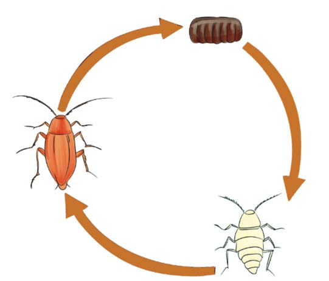

within two months depending on the environmental conditions such as temperature. Nymphs are small with soft, outer layer and do not have wings. After three months, the nymphs grow into adult cockroaches. See Figure 7.

Adult Egg NymphRegular cleaning and organising of clothes and other items can remove cockroach breeding and hiding places. You can also use insecticides to kill cockroaches.